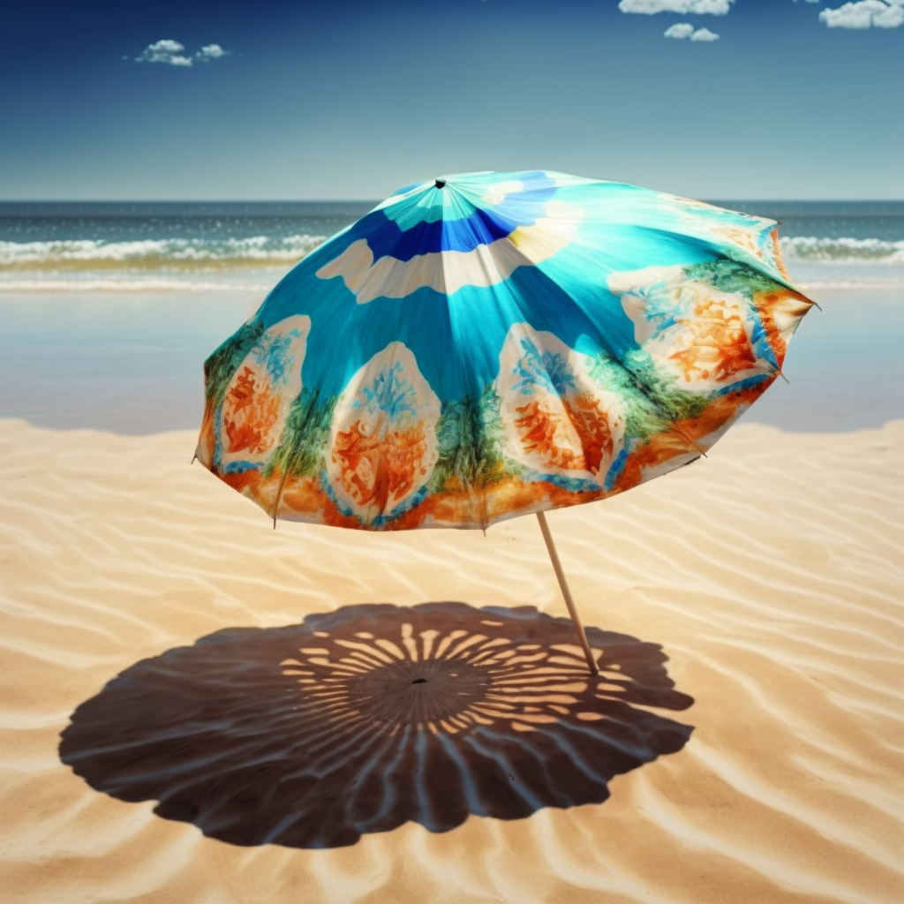
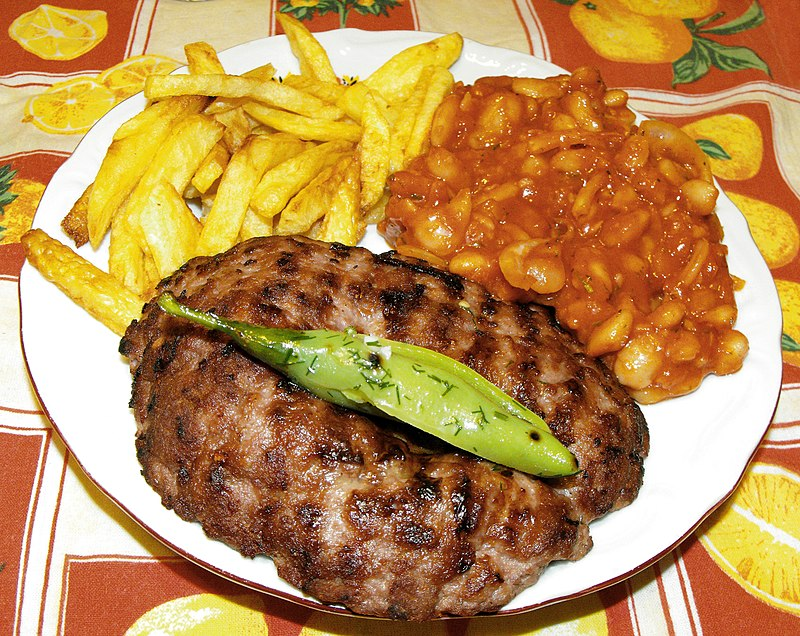
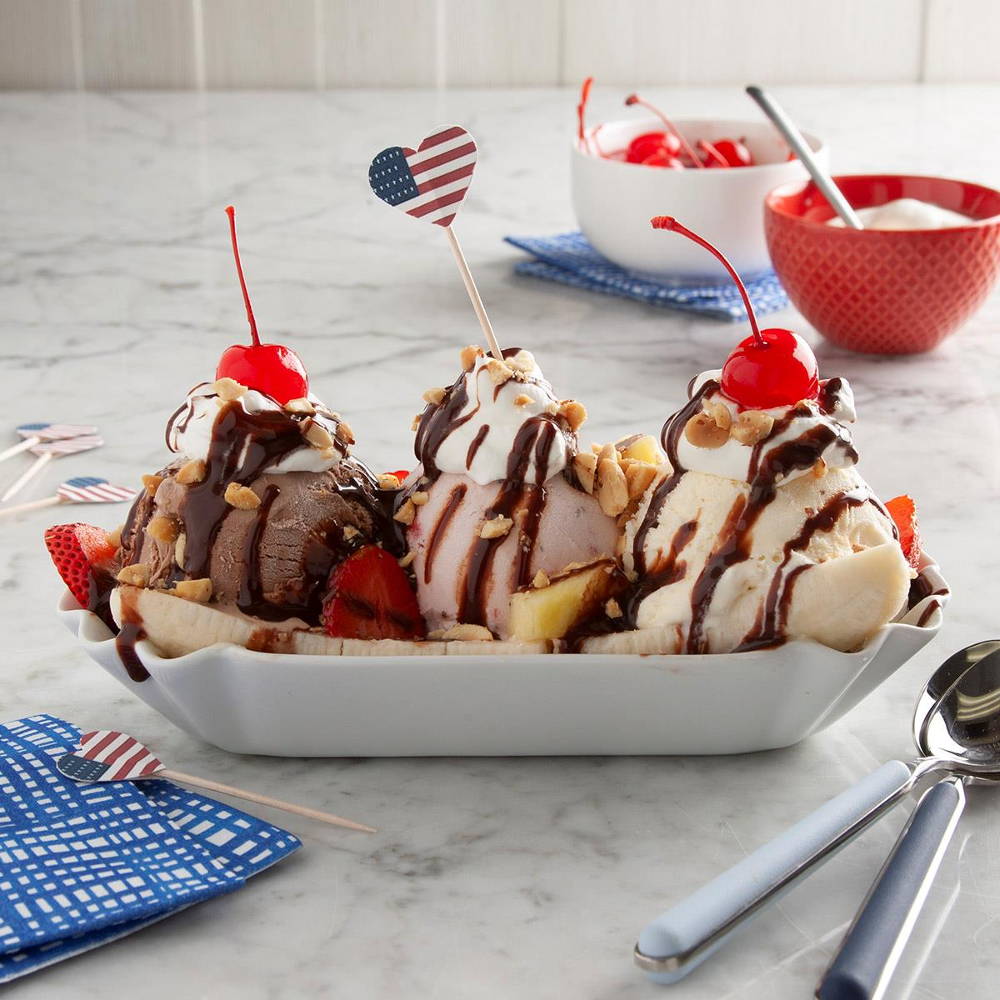

In Croatia, there is the sea with beautiful sandy beaches. You can see seagulls flying around. If you don't like the sea, you can find a mountain near you and you can hike or bike up to it.
Like this:
From the top of the mountain, you will see the sea with the beaches, little islands and many people playing volleyball or building sandcastles. It has a feeling.
But if you're not interested in the sight of the sea, you can take a walk in the old town of the city. For example, Rovinj has a wonderful old town. The old town is on a little mountain, and in the middle of the old town, there is an old church where you have an awesome view.
This is Rovinj's Old Town:
The view from the church:
Have you ever "heard a seagull"? Yeah, I have, and I really liked it. When you're under a beach umbrella, what do you hear?
Maybe the sound of the seagulls? Or the sound of the waves? Or the sound of the people around you? When I think of it, I hear all of these sounds. Plus, the old town sound in the evening when we go to have dinner.
Stop playing the video before you continue!
They often eat cevapcici and pleskavica in Croatia. Pleskavica is a meat (like hamburger meat), but the pleskavica made by 20% pork, 40% beef and 40% other meats.
I have eaten it twice, but I don't like it. Some people really like it. In a normal restaurant in the menu, you can find: Italian foods (like pastas and pizzas); some Asian foods (WOK pastas); "foods from the sea" (fishes, sea crayfish); or pleskavica and cevapcici. After a nice meal in Croatia, you need to find an ice cream shop (for dessert). Their ice creams are the best. And once in your life, you need to try the Banana Split.
I felt relaxed all the time in Croatia. I felt wonder - with its crystal clear waters and picturesque beaches.

Wonder with the natural history of the country. And also wonderful because of the beautiful panoramas, animals, plants, beaches, and the sea.